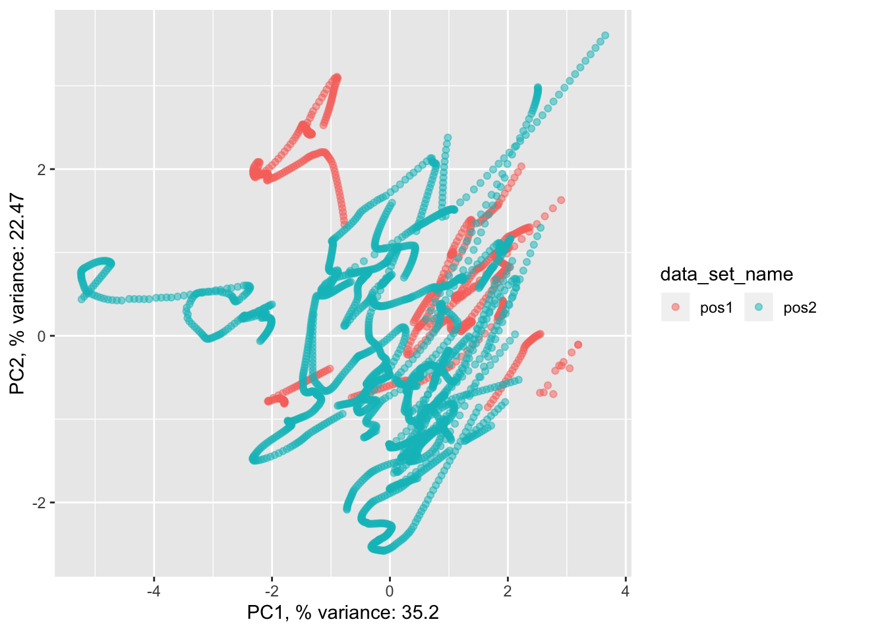
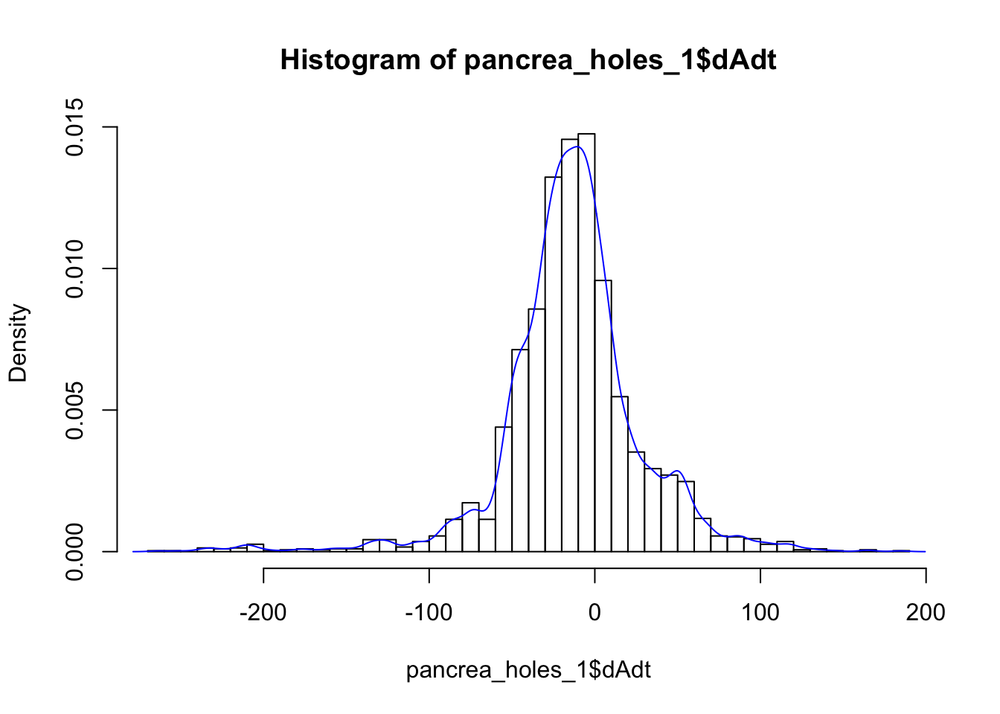
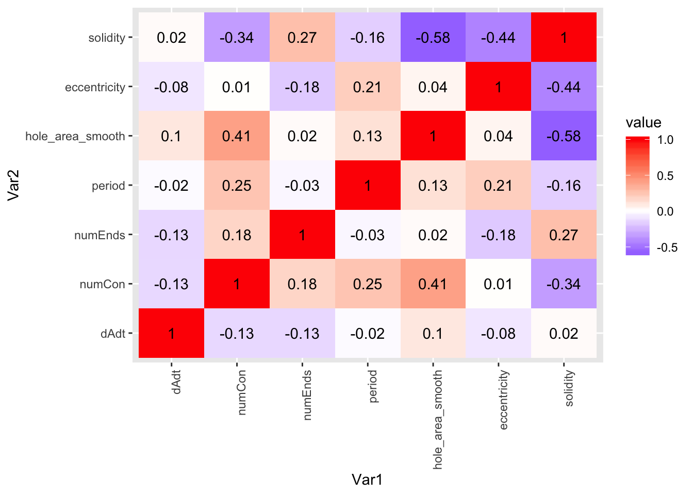
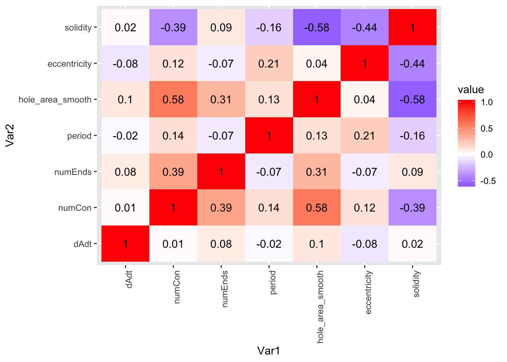
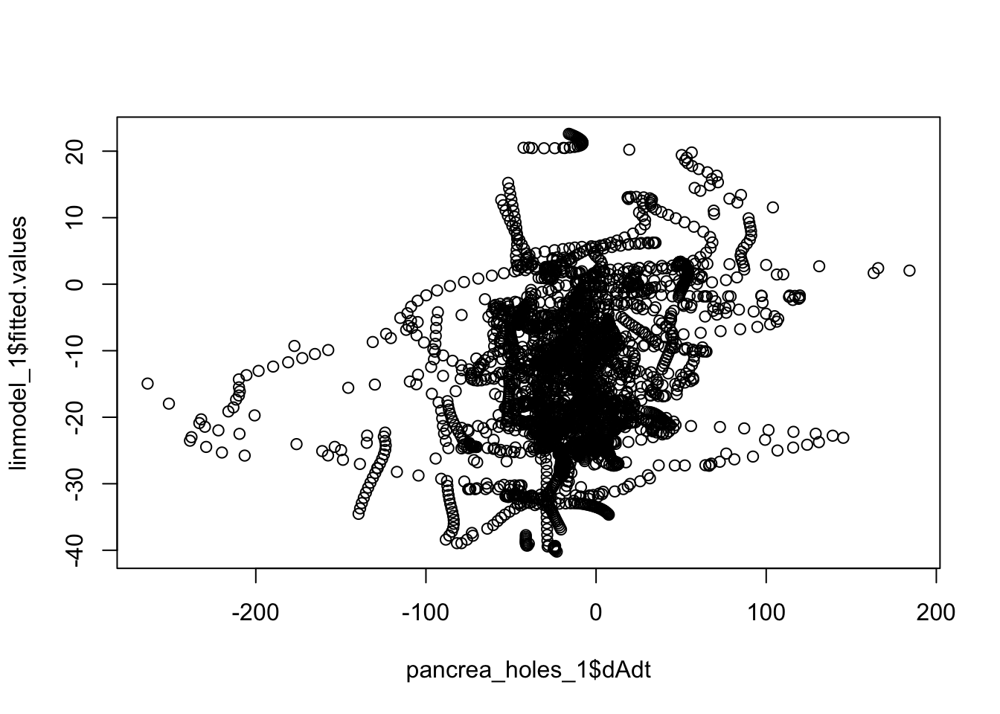
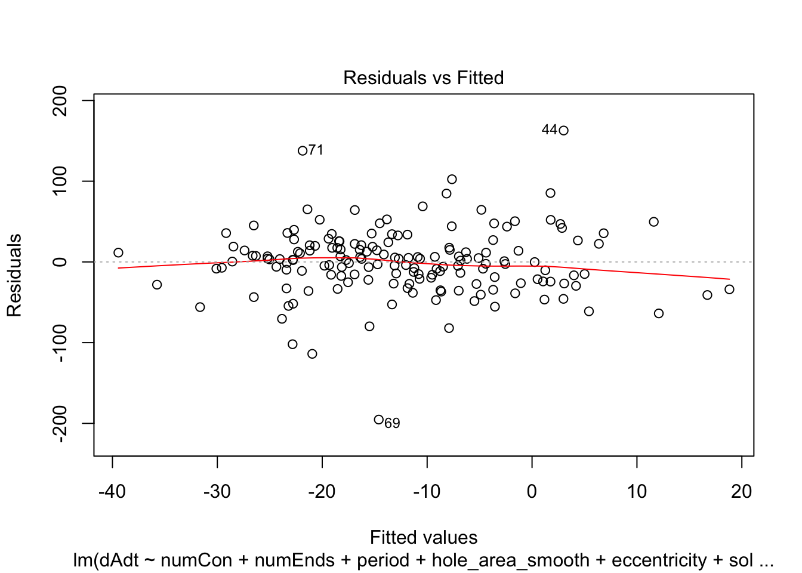

first_steps
Githubz0r
2/13/2020
Last updated: 2020-02-28
Checks: 7 0
Knit directory: semb/
This reproducible R Markdown analysis was created with workflowr (version 1.6.0). The Checks tab describes the reproducibility checks that were applied when the results were created. The Past versions tab lists the development history.
Great! Since the R Markdown file has been committed to the Git repository, you know the exact version of the code that produced these results.
Great job! The global environment was empty. Objects defined in the global environment can affect the analysis in your R Markdown file in unknown ways. For reproduciblity it’s best to always run the code in an empty environment.
The command set.seed(20200213) was run prior to running the code in the R Markdown file. Setting a seed ensures that any results that rely on randomness, e.g. subsampling or permutations, are reproducible.
Great job! Recording the operating system, R version, and package versions is critical for reproducibility.
Nice! There were no cached chunks for this analysis, so you can be confident that you successfully produced the results during this run.
Great job! Using relative paths to the files within your workflowr project makes it easier to run your code on other machines.
Great! You are using Git for version control. Tracking code development and connecting the code version to the results is critical for reproducibility. The version displayed above was the version of the Git repository at the time these results were generated.
Note that you need to be careful to ensure that all relevant files for the analysis have been committed to Git prior to generating the results (you can use wflow_publish or wflow_git_commit). workflowr only checks the R Markdown file, but you know if there are other scripts or data files that it depends on. Below is the status of the Git repository when the results were generated:
Ignored files:
Ignored: .Rhistory
Ignored: .Rproj.user/
Ignored: analysis/figure/
Untracked files:
Untracked: analysis/first_steps.Rmd
Untracked: code/data_entry_pancrea_holes.R
Untracked: code/for_wflow_cmds.R
Note that any generated files, e.g. HTML, png, CSS, etc., are not included in this status report because it is ok for generated content to have uncommitted changes.
These are the previous versions of the R Markdown and HTML files. If you’ve configured a remote Git repository (see ?wflow_git_remote), click on the hyperlinks in the table below to view them.
| File | Version | Author | Date | Message |
|---|---|---|---|---|
| Rmd | fbfb766 | githubz0r | 2020-02-28 | upload markdown of lm analysis and comparison of silja pancrea and my pancrea |
preparation
Load data and packages. We’ll just both the data set with numCon/numEnds annotated by Silja and the one annotated by me.
library(tidyverse)── Attaching packages ────────────────────────────────────────────────────────────────────────────────────────────────────────────────────────────────────────────── tidyverse 1.3.0 ──✔ ggplot2 3.2.1 ✔ purrr 0.3.3
✔ tibble 2.1.3 ✔ dplyr 0.8.3
✔ tidyr 1.0.0 ✔ stringr 1.4.0
✔ readr 1.3.1 ✔ forcats 0.4.0── Conflicts ───────────────────────────────────────────────────────────────────────────────────────────────────────────────────────────────────────────────── tidyverse_conflicts() ──
✖ dplyr::filter() masks stats::filter()
✖ dplyr::lag() masks stats::lag()library(irlba)Loading required package: Matrix
Attaching package: 'Matrix'The following objects are masked from 'package:tidyr':
expand, pack, unpacklibrary(magrittr)
Attaching package: 'magrittr'The following object is masked from 'package:purrr':
set_namesThe following object is masked from 'package:tidyr':
extractlibrary(cowplot)
********************************************************Note: As of version 1.0.0, cowplot does not change the default ggplot2 theme anymore. To recover the previous behavior, execute:
theme_set(theme_cowplot())********************************************************pancrea_holes_all <- read.csv('/Users/Deathvoodoo/Documents/semb_int/TableTilLars.csv')
pancrea_holes_altered <- read.csv('/Users/Deathvoodoo/Documents/semb_int/table_2_full.csv')
pancrea_holes_1 <- pancrea_holes_all[names(pancrea_holes_all)!='hole_area_raw'] %>% na.omit
pancrea_holes_2 <- pancrea_holes_altered[names(pancrea_holes_altered)!='hole_area_raw'] %>% na.omitanalysis
First some plots We just quickly visualize dAdt as a function of each predictor.
predictors_1 <- c("numCon", "numEnds", "period", "hole_area_smooth", "eccentricity", "solidity")
predictors_2 <- c("numCon", "numEnds", "period", "hole_area_smooth", "eccentricity", "solidity")
#predictors_3 <- c("numCon", "numEnds", "period", "hole_area_smooth", "eccentricity", "solidity", "time_point")
pancrea_1_norm <- pancrea_holes_1 %>% lapply(function(x){if (x[1] %>% is.numeric()) {x/sd(x)} else{x}}) %>% as.data.frame()
pancrea_2_norm <- pancrea_holes_2 %>% lapply(function(x){if (x[1] %>% is.numeric()) {x/sd(x)} else{x}}) %>% as.data.frame()
pancrea_1_norm_long <- pancrea_1_norm %>% pivot_longer(cols=predictors_1, names_to='predictors')
pancrea_2_norm_long <- pancrea_2_norm %>% pivot_longer(cols=predictors_2, names_to='predictors')
pancrea_1_norm_long %>% ggplot(aes(x=value, y=dAdt, col=predictors))+geom_point(size=0.2, alpha=0.5)pancrea_2_norm_long %>% ggplot(aes(x=value, y=dAdt, col=predictors))+geom_point(size=0.2, alpha=0.5)Now we do some PCA plots, with and without scaling the variances. We color both by hole and dataset to get an overview of how our points are lying together.
DoIrlbaPCA <- function(data.mat, predictor.names, make.plots=T){
panc.pca.unscaled <- irlba::prcomp_irlba(data.mat[predictor.names], n=2)
panc.pca.scaled <- irlba::prcomp_irlba(data.mat[predictor.names], n=2, scale.=T)
if(make.plots){
panc.pca.unscaled.df <- setNames(panc.pca.unscaled$x %>% as.data.frame, c('PC1', 'PC2')) %>% bind_cols(data.mat[setdiff(names(data.mat), predictor.names)])
panc.pca.scaled.df <- setNames(panc.pca.scaled$x %>% as.data.frame, c('PC1', 'PC2')) %>% bind_cols(data.mat[setdiff(names(data.mat), predictor.names)])
phole.unscaled <- panc.pca.unscaled.df %>% ggplot(aes(x=PC1, y=PC2, col=as.factor(hole_num_rep), shape=data_set_name))+geom_point(alpha=0.5)+guides(col = guide_legend(ncol = 3))
phole.scaled <- panc.pca.scaled.df %>% ggplot(aes(x=PC1, y=PC2, col=as.factor(hole_num_rep), shape=data_set_name))+geom_point(alpha=0.5)+guides(col = guide_legend(ncol = 3))
pdataset.scaled <- panc.pca.scaled.df %>% ggplot(aes(x=PC1, y=PC2, col=data_set_name))+geom_point(alpha=0.5)+guides(col = guide_legend(ncol = 3))
}
return(list(panc.pca.unscaled=panc.pca.unscaled, panc.pca.scaled=panc.pca.scaled, phole.unscaled=phole.unscaled, phole.scaled=phole.scaled,
pdataset.scaled=pdataset.scaled))
}
pancrea_1_pca <- DoIrlbaPCA(pancrea_holes_1, predictors_1)
pancrea_2_pca <- DoIrlbaPCA(pancrea_holes_2, predictors_2)
pancrea_1_pca$phole.scaledpancrea_1_pca$pdataset.scaled
pancrea_2_pca$phole.scaledpancrea_2_pca$pdataset.scaledCheck weights of the features in the rotation matrices
predictors_2 %>% setNames(1:length(predictors_2), .) numCon numEnds period hole_area_smooth
1 2 3 4
eccentricity solidity
5 6 pancrea_1_pca$panc.pca.scaled$rotation PC1 PC2
[1,] -0.4144738 -0.49053188
[2,] 0.1312448 -0.64677488
[3,] -0.3038964 -0.02637844
[4,] -0.5044041 -0.27287369
[5,] -0.3329065 0.48612903
[6,] 0.5944602 -0.17199831pancrea_2_pca$panc.pca.scaled$rotation PC1 PC2
[1,] 0.5228088 -0.2554301
[2,] 0.2345789 -0.6083004
[3,] 0.2065639 0.3559548
[4,] 0.5514703 -0.1930589
[5,] 0.2609432 0.5384805
[6,] -0.5067190 -0.3328503We check distribution of dAdt. Of course, for fitting a linear model (with gaussian noise) we assume that the data is normally distributed, so it better be.
qplot(pancrea_holes_1$dAdt)`stat_bin()` using `bins = 30`. Pick better value with `binwidth`.
Check correlation between variables, both as scatter plot and heat map.
MakeCorrelationPlots <- function(data.matrix){
corr.mat <- cor(data.matrix)
corr.values <- corr.mat; corr.values[upper.tri(corr.values, diag=T)] <- NA
corr.values <- corr.values %>% reshape2::melt() %>% na.omit %>% transmute(which_factors=paste0(Var1,"+", Var2), correlation=value)
pcor.scatter <- corr.values %>% ggplot(aes(x=which_factors, y=correlation))+geom_point()+theme(axis.text.x = element_text(angle = 90, hjust = 1))
pcor.heat <- corr.mat %>% reshape2::melt() %>% ggplot(aes(x=Var1, y=Var2, fill=value))+geom_tile()+scale_fill_continuous(high = "#132B43", low = "#56B1F7")+
theme(axis.text.x = element_text(angle = 90, hjust = 1))
return(list(pcor.scatter=pcor.scatter, pcor.heat=pcor.heat))
}
corplot_1 <- MakeCorrelationPlots(pancrea_holes_1[c('dAdt', predictors_1)])
corplot_2 <- MakeCorrelationPlots(pancrea_holes_2[c('dAdt', predictors_2)])
corplot_1$pcor.scattercorplot_1$pcor.heat
corplot_2$pcor.scatter
corplot_2$pcor.heat
Now we start fitting some models. We first try all the variables. Note that we are omitting dEdt because Silja said it’s not important and also numEnds_over_numCon since it’s very highly correlation with numEnds
cor(pancrea_holes_1$numEnds, pancrea_holes_1$numEnds_over_numCon)[1] 0.9663755The third model will be including the time, i.e. the time in the video annotated by me.
linmodel_1 <- lm(dAdt~numCon + numEnds + period + hole_area_smooth + eccentricity + solidity, data = pancrea_holes_1)
linmodel_2 <- lm(dAdt~numCon + numEnds + period + hole_area_smooth + eccentricity + solidity, data = pancrea_holes_2)
linmodel_time <- lm(dAdt~numCon + numEnds + period + hole_area_smooth + eccentricity + solidity + time_point, data = pancrea_holes_2)Diagnostic plots of the models. Things definitely do not look iid/evenly distribution noise/homoskedastic
plot(linmodel_1)plot(linmodel_2)
plot(linmodel_time)We print some summaries of the models. This gives some various statistical info, such as e.g. weight estimates, p values when doing some kind of t-test of the weights (with null hypothesis that they are equal to zero). This gives similar values to doing a likelihood ratio test where the nested model lacks that coefficient. Note that the models are all complete trash, judging by the R^2 values.
summary(linmodel_1)
Call:
lm(formula = dAdt ~ numCon + numEnds + period + hole_area_smooth +
eccentricity + solidity, data = pancrea_holes_1)
Residuals:
Min 1Q Median 3Q Max
-248.653 -18.581 2.319 19.959 182.195
Coefficients:
Estimate Std. Error t value Pr(>|t|)
(Intercept) -6.555e+01 2.537e+01 -2.584 0.009820 **
numCon -6.016e+00 7.448e-01 -8.077 9.48e-16 ***
numEnds -6.282e+00 8.174e-01 -7.685 2.04e-14 ***
period 2.127e-01 1.750e-01 1.215 0.224327
hole_area_smooth 4.393e-03 4.287e-04 10.247 < 2e-16 ***
eccentricity -2.789e+01 8.026e+00 -3.475 0.000517 ***
solidity 9.887e+01 2.330e+01 4.244 2.26e-05 ***
---
Signif. codes: 0 '***' 0.001 '**' 0.01 '*' 0.05 '.' 0.1 ' ' 1
Residual standard error: 40.51 on 3063 degrees of freedom
Multiple R-squared: 0.07249, Adjusted R-squared: 0.07067
F-statistic: 39.9 on 6 and 3063 DF, p-value: < 2.2e-16summary(linmodel_2)
Call:
lm(formula = dAdt ~ numCon + numEnds + period + hole_area_smooth +
eccentricity + solidity, data = pancrea_holes_2)
Residuals:
Min 1Q Median 3Q Max
-251.242 -20.044 0.096 21.088 186.804
Coefficients:
Estimate Std. Error t value Pr(>|t|)
(Intercept) -4.368e+01 2.592e+01 -1.685 0.09201 .
numCon -2.650e+00 8.188e-01 -3.237 0.00122 **
numEnds 1.523e+00 7.032e-01 2.166 0.03041 *
period -5.143e-02 1.762e-01 -0.292 0.77033
hole_area_smooth 3.141e-03 5.047e-04 6.223 5.55e-10 ***
eccentricity -1.873e+01 8.219e+00 -2.279 0.02276 *
solidity 5.449e+01 2.391e+01 2.279 0.02275 *
---
Signif. codes: 0 '***' 0.001 '**' 0.01 '*' 0.05 '.' 0.1 ' ' 1
Residual standard error: 41.53 on 3063 degrees of freedom
Multiple R-squared: 0.02545, Adjusted R-squared: 0.02355
F-statistic: 13.33 on 6 and 3063 DF, p-value: 5.671e-15summary(linmodel_time)
Call:
lm(formula = dAdt ~ numCon + numEnds + period + hole_area_smooth +
eccentricity + solidity + time_point, data = pancrea_holes_2)
Residuals:
Min 1Q Median 3Q Max
-251.898 -19.883 0.044 21.039 186.622
Coefficients:
Estimate Std. Error t value Pr(>|t|)
(Intercept) -4.396e+01 2.592e+01 -1.696 0.09002 .
numCon -2.357e+00 8.871e-01 -2.657 0.00793 **
numEnds 1.572e+00 7.056e-01 2.228 0.02593 *
period -3.726e-02 1.769e-01 -0.211 0.83323
hole_area_smooth 3.041e-03 5.178e-04 5.873 4.74e-09 ***
eccentricity -1.799e+01 8.264e+00 -2.177 0.02955 *
solidity 5.372e+01 2.393e+01 2.245 0.02485 *
time_point -1.194e-02 1.389e-02 -0.860 0.39011
---
Signif. codes: 0 '***' 0.001 '**' 0.01 '*' 0.05 '.' 0.1 ' ' 1
Residual standard error: 41.53 on 3062 degrees of freedom
Multiple R-squared: 0.02569, Adjusted R-squared: 0.02346
F-statistic: 11.53 on 7 and 3062 DF, p-value: 1.546e-14Just testing linmodel_time vs the nested model linmodel_2 (and we can also do some aic). We see that time basically sucks.
anova(linmodel_2, linmodel_time)Analysis of Variance Table
Model 1: dAdt ~ numCon + numEnds + period + hole_area_smooth + eccentricity +
solidity
Model 2: dAdt ~ numCon + numEnds + period + hole_area_smooth + eccentricity +
solidity + time_point
Res.Df RSS Df Sum of Sq F Pr(>F)
1 3063 5282761
2 3062 5281486 1 1274.3 0.7388 0.3901AIC(linmodel_2) - AIC(linmodel_time) # should be positive if linmodel 3 is better[1] -1.259347Is our model even better than just random shit? We can make some random data frames and see.
RandomizeDataframe <- function(df){
df.random <- df %>% lapply(function(x){sample(x)}) %>% as.data.frame
return(df.random)
}
random_pancreas <- replicate(100, RandomizeDataframe(pancrea_holes_1), simplify = FALSE)Let’s test the random data frames
random_results <- random_pancreas %>% lapply(function(x){
linmodel.random <- lm(dAdt~numCon + numEnds + period + hole_area_smooth + eccentricity + solidity, data = x)
random.lm.summary <- summary(linmodel.random)
residual.standard.error <- random.lm.summary$sigma
r.squared <- random.lm.summary$r.squared
r.squared.adjusted <- random.lm.summary$adj.r.squared
sum.squared.resids <- sum(residuals(linmodel.random)^2)
return(c(residual.standard.error=residual.standard.error, r.squared=r.squared,
r.squared.adjusted=r.squared.adjusted, sum.squared.resids=sum.squared.resids))
})
output_values_random <-random_results[[1]] %>% names %>% lapply(function(x){
value.for.all.res <- random_results %>% lapply(function(result.vector){result.vector[[x]] %>% unname})
return(value.for.all.res)
}) %>% lapply(unlist); output_values_random %<>% setNames(random_results[[1]] %>% names)
output_values_random$residual.standard.error %>% qplot`stat_bin()` using `bins = 30`. Pick better value with `binwidth`.
output_values_random$r.squared %>% qplot`stat_bin()` using `bins = 30`. Pick better value with `binwidth`.
output_values_random$r.squared.adjusted %>% qplot`stat_bin()` using `bins = 30`. Pick better value with `binwidth`.
output_values_random$sum.squared.resids %>% qplot`stat_bin()` using `bins = 30`. Pick better value with `binwidth`. We compare mean values from randomized data frames with the values for the first linear model. It’s a little bit better.
We compare mean values from randomized data frames with the values for the first linear model. It’s a little bit better.
output_values_random %>% lapply(mean) %>% unlistresidual.standard.error r.squared r.squared.adjusted
4.202383e+01 2.116853e-03 1.621355e-04
sum.squared.resids
5.409268e+06 summary(linmodel_1)
Call:
lm(formula = dAdt ~ numCon + numEnds + period + hole_area_smooth +
eccentricity + solidity, data = pancrea_holes_1)
Residuals:
Min 1Q Median 3Q Max
-248.653 -18.581 2.319 19.959 182.195
Coefficients:
Estimate Std. Error t value Pr(>|t|)
(Intercept) -6.555e+01 2.537e+01 -2.584 0.009820 **
numCon -6.016e+00 7.448e-01 -8.077 9.48e-16 ***
numEnds -6.282e+00 8.174e-01 -7.685 2.04e-14 ***
period 2.127e-01 1.750e-01 1.215 0.224327
hole_area_smooth 4.393e-03 4.287e-04 10.247 < 2e-16 ***
eccentricity -2.789e+01 8.026e+00 -3.475 0.000517 ***
solidity 9.887e+01 2.330e+01 4.244 2.26e-05 ***
---
Signif. codes: 0 '***' 0.001 '**' 0.01 '*' 0.05 '.' 0.1 ' ' 1
Residual standard error: 40.51 on 3063 degrees of freedom
Multiple R-squared: 0.07249, Adjusted R-squared: 0.07067
F-statistic: 39.9 on 6 and 3063 DF, p-value: < 2.2e-16sum(residuals(linmodel_1)^2)[1] 5027797Now we can do some stepwise linear regression with different R packages, using AIC/BIC as criteria.
library(MASS)
Attaching package: 'MASS'The following object is masked from 'package:dplyr':
selectlibrary(leaps)First using MASS
step_mass_bi <- stepAIC(linmodel_1, direction='both')Start: AIC=22735.25
dAdt ~ numCon + numEnds + period + hole_area_smooth + eccentricity +
solidity
Df Sum of Sq RSS AIC
- period 1 2425 5030221 22735
<none> 5027797 22735
- eccentricity 1 19826 5047623 22745
- solidity 1 29564 5057360 22751
- numEnds 1 96948 5124744 22792
- numCon 1 107075 5134871 22798
- hole_area_smooth 1 172367 5200163 22837
Step: AIC=22734.73
dAdt ~ numCon + numEnds + hole_area_smooth + eccentricity + solidity
Df Sum of Sq RSS AIC
<none> 5030221 22735
+ period 1 2425 5027797 22735
- eccentricity 1 17873 5048094 22744
- solidity 1 30451 5060672 22751
- numEnds 1 98933 5129155 22792
- numCon 1 105419 5135640 22796
- hole_area_smooth 1 174482 5204703 22837summary(step_mass_bi)
Call:
lm(formula = dAdt ~ numCon + numEnds + hole_area_smooth + eccentricity +
solidity, data = pancrea_holes_1)
Residuals:
Min 1Q Median 3Q Max
-248.81 -18.10 1.92 19.81 183.92
Coefficients:
Estimate Std. Error t value Pr(>|t|)
(Intercept) -6.441e+01 2.535e+01 -2.540 0.01112 *
numCon -5.805e+00 7.244e-01 -8.013 1.57e-15 ***
numEnds -6.337e+00 8.163e-01 -7.763 1.12e-14 ***
hole_area_smooth 4.416e-03 4.284e-04 10.309 < 2e-16 ***
eccentricity -2.596e+01 7.867e+00 -3.299 0.00098 ***
solidity 1.002e+02 2.327e+01 4.307 1.71e-05 ***
---
Signif. codes: 0 '***' 0.001 '**' 0.01 '*' 0.05 '.' 0.1 ' ' 1
Residual standard error: 40.52 on 3064 degrees of freedom
Multiple R-squared: 0.07204, Adjusted R-squared: 0.07053
F-statistic: 47.57 on 5 and 3064 DF, p-value: < 2.2e-16We can try putting in a model with second order interactions and see what happens.
step_mass_squared_bi <- stepAIC(lm(dAdt~.^2, data = pancrea_holes_1[c('dAdt', predictors_1)]), direction='both')Start: AIC=22280.89
dAdt ~ (numCon + numEnds + period + hole_area_smooth + eccentricity +
solidity)^2
Df Sum of Sq RSS AIC
- numEnds:hole_area_smooth 1 405 4294365 22279
- numEnds:solidity 1 569 4294529 22279
- period:hole_area_smooth 1 1908 4295868 22280
<none> 4293960 22281
- numEnds:period 1 3012 4296972 22281
- numEnds:eccentricity 1 4029 4297989 22282
- numCon:period 1 15649 4309609 22290
- period:solidity 1 16108 4310068 22290
- period:eccentricity 1 17205 4311164 22291
- numCon:eccentricity 1 18125 4312085 22292
- eccentricity:solidity 1 22362 4316321 22295
- numCon:solidity 1 63673 4357633 22324
- numCon:numEnds 1 102497 4396456 22351
- numCon:hole_area_smooth 1 109613 4403572 22356
- hole_area_smooth:eccentricity 1 184435 4478395 22408
- hole_area_smooth:solidity 1 327369 4621328 22504
Step: AIC=22279.18
dAdt ~ numCon + numEnds + period + hole_area_smooth + eccentricity +
solidity + numCon:numEnds + numCon:period + numCon:hole_area_smooth +
numCon:eccentricity + numCon:solidity + numEnds:period +
numEnds:eccentricity + numEnds:solidity + period:hole_area_smooth +
period:eccentricity + period:solidity + hole_area_smooth:eccentricity +
hole_area_smooth:solidity + eccentricity:solidity
Df Sum of Sq RSS AIC
- numEnds:solidity 1 178 4294543 22277
- period:hole_area_smooth 1 2131 4296496 22279
<none> 4294365 22279
- numEnds:period 1 3436 4297801 22280
- numEnds:eccentricity 1 3643 4298008 22280
+ numEnds:hole_area_smooth 1 405 4293960 22281
- numCon:period 1 15244 4309609 22288
- period:solidity 1 16700 4311065 22289
- period:eccentricity 1 17304 4311669 22290
- numCon:eccentricity 1 18882 4313247 22291
- eccentricity:solidity 1 22077 4316442 22293
- numCon:solidity 1 63271 4357636 22322
- numCon:numEnds 1 106057 4400422 22352
- numCon:hole_area_smooth 1 114792 4409157 22358
- hole_area_smooth:eccentricity 1 184369 4478734 22406
- hole_area_smooth:solidity 1 334495 4628859 22508
Step: AIC=22277.31
dAdt ~ numCon + numEnds + period + hole_area_smooth + eccentricity +
solidity + numCon:numEnds + numCon:period + numCon:hole_area_smooth +
numCon:eccentricity + numCon:solidity + numEnds:period +
numEnds:eccentricity + period:hole_area_smooth + period:eccentricity +
period:solidity + hole_area_smooth:eccentricity + hole_area_smooth:solidity +
eccentricity:solidity
Df Sum of Sq RSS AIC
- period:hole_area_smooth 1 2258 4296801 22277
<none> 4294543 22277
- numEnds:eccentricity 1 3523 4298067 22278
- numEnds:period 1 5087 4299630 22279
+ numEnds:solidity 1 178 4294365 22279
+ numEnds:hole_area_smooth 1 14 4294529 22279
- numCon:period 1 15158 4309701 22286
- period:solidity 1 17073 4311616 22288
- period:eccentricity 1 17716 4312259 22288
- numCon:eccentricity 1 19816 4314359 22289
- eccentricity:solidity 1 22158 4316701 22291
- numCon:solidity 1 70592 4365136 22325
- numCon:hole_area_smooth 1 115390 4409933 22357
- numCon:numEnds 1 120313 4414856 22360
- hole_area_smooth:eccentricity 1 185186 4479729 22405
- hole_area_smooth:solidity 1 348112 4642656 22515
Step: AIC=22276.92
dAdt ~ numCon + numEnds + period + hole_area_smooth + eccentricity +
solidity + numCon:numEnds + numCon:period + numCon:hole_area_smooth +
numCon:eccentricity + numCon:solidity + numEnds:period +
numEnds:eccentricity + period:eccentricity + period:solidity +
hole_area_smooth:eccentricity + hole_area_smooth:solidity +
eccentricity:solidity
Df Sum of Sq RSS AIC
<none> 4296801 22277
- numEnds:eccentricity 1 2898 4299699 22277
+ period:hole_area_smooth 1 2258 4294543 22277
- numEnds:period 1 4599 4301400 22278
+ numEnds:solidity 1 306 4296496 22279
+ numEnds:hole_area_smooth 1 18 4296784 22279
- period:solidity 1 15117 4311918 22286
- numCon:period 1 15498 4312299 22286
- period:eccentricity 1 15779 4312580 22286
- eccentricity:solidity 1 21183 4317984 22290
- numCon:eccentricity 1 22487 4319288 22291
- numCon:solidity 1 68903 4365704 22324
- numCon:numEnds 1 119991 4416792 22360
- numCon:hole_area_smooth 1 146145 4442946 22378
- hole_area_smooth:eccentricity 1 183921 4480722 22404
- hole_area_smooth:solidity 1 347521 4644322 22514summary(step_mass_squared_bi)
Call:
lm(formula = dAdt ~ numCon + numEnds + period + hole_area_smooth +
eccentricity + solidity + numCon:numEnds + numCon:period +
numCon:hole_area_smooth + numCon:eccentricity + numCon:solidity +
numEnds:period + numEnds:eccentricity + period:eccentricity +
period:solidity + hole_area_smooth:eccentricity + hole_area_smooth:solidity +
eccentricity:solidity, data = pancrea_holes_1[c("dAdt", predictors_1)])
Residuals:
Min 1Q Median 3Q Max
-209.37 -18.57 2.34 18.93 175.63
Coefficients:
Estimate Std. Error t value Pr(>|t|)
(Intercept) 1.373e+02 2.107e+02 0.652 0.514734
numCon -1.495e+02 3.063e+01 -4.882 1.10e-06 ***
numEnds 3.383e+01 9.868e+00 3.428 0.000616 ***
period 1.785e+01 6.351e+00 2.810 0.004989 **
hole_area_smooth 2.306e-01 1.363e-02 16.918 < 2e-16 ***
eccentricity -3.109e+02 1.857e+02 -1.674 0.094143 .
solidity -5.048e+02 2.140e+02 -2.359 0.018372 *
numCon:numEnds -1.088e+01 1.179e+00 -9.230 < 2e-16 ***
numCon:period 1.091e+00 3.289e-01 3.317 0.000920 ***
numCon:hole_area_smooth -4.652e-03 4.566e-04 -10.187 < 2e-16 ***
numCon:eccentricity -4.019e+01 1.006e+01 -3.996 6.60e-05 ***
numCon:solidity 1.952e+02 2.791e+01 6.995 3.25e-12 ***
numEnds:period 4.589e-01 2.539e-01 1.807 0.070844 .
numEnds:eccentricity -1.486e+01 1.036e+01 -1.434 0.151553
period:eccentricity -5.812e+00 1.736e+00 -3.347 0.000826 ***
period:solidity -1.880e+01 5.739e+00 -3.276 0.001064 **
hole_area_smooth:eccentricity -6.308e-02 5.520e-03 -11.428 < 2e-16 ***
hole_area_smooth:solidity -1.796e-01 1.143e-02 -15.709 < 2e-16 ***
eccentricity:solidity 7.934e+02 2.046e+02 3.878 0.000107 ***
---
Signif. codes: 0 '***' 0.001 '**' 0.01 '*' 0.05 '.' 0.1 ' ' 1
Residual standard error: 37.53 on 3051 degrees of freedom
Multiple R-squared: 0.2073, Adjusted R-squared: 0.2027
F-statistic: 44.34 on 18 and 3051 DF, p-value: < 2.2e-16Gives better adjusted R squared fo sho.
Using leaps package
models_leap <- regsubsets(dAdt~., data = pancrea_holes_1[c('dAdt', predictors_1)], nvmax = 7,
method = "seqrep")
summary_leap <- summary(models_leap)
summary_leapSubset selection object
Call: regsubsets.formula(dAdt ~ ., data = pancrea_holes_1[c("dAdt",
predictors_1)], nvmax = 7, method = "seqrep")
6 Variables (and intercept)
Forced in Forced out
numCon FALSE FALSE
numEnds FALSE FALSE
period FALSE FALSE
hole_area_smooth FALSE FALSE
eccentricity FALSE FALSE
solidity FALSE FALSE
1 subsets of each size up to 6
Selection Algorithm: 'sequential replacement'
numCon numEnds period hole_area_smooth eccentricity solidity
1 ( 1 ) " " "*" " " " " " " " "
2 ( 1 ) "*" " " " " "*" " " " "
3 ( 1 ) "*" "*" "*" " " " " " "
4 ( 1 ) "*" "*" " " "*" " " "*"
5 ( 1 ) "*" "*" " " "*" "*" "*"
6 ( 1 ) "*" "*" "*" "*" "*" "*" summary_leap$bic[1] -36.07497 -117.79142 -56.77597 -178.50501 -181.36415 -174.81480Doing both forwards and backwards just because.
models_forward <- regsubsets(dAdt~., data = pancrea_holes_1[c('dAdt', predictors_1)], nvmax = 7,
method = "forward")
summary_forward <- summary(models_forward)
summary_forwardSubset selection object
Call: regsubsets.formula(dAdt ~ ., data = pancrea_holes_1[c("dAdt",
predictors_1)], nvmax = 7, method = "forward")
6 Variables (and intercept)
Forced in Forced out
numCon FALSE FALSE
numEnds FALSE FALSE
period FALSE FALSE
hole_area_smooth FALSE FALSE
eccentricity FALSE FALSE
solidity FALSE FALSE
1 subsets of each size up to 6
Selection Algorithm: forward
numCon numEnds period hole_area_smooth eccentricity solidity
1 ( 1 ) " " "*" " " " " " " " "
2 ( 1 ) "*" "*" " " " " " " " "
3 ( 1 ) "*" "*" " " "*" " " " "
4 ( 1 ) "*" "*" " " "*" " " "*"
5 ( 1 ) "*" "*" " " "*" "*" "*"
6 ( 1 ) "*" "*" "*" "*" "*" "*" summary_forward$bic[1] -36.07497 -64.65230 -141.25660 -178.50501 -181.36415 -174.81480models_backward <- regsubsets(dAdt~., data = pancrea_holes_1[c('dAdt', predictors_1)], nvmax = 7,
method = "backward")
summary_backward <- summary(models_backward)
summary_backwardSubset selection object
Call: regsubsets.formula(dAdt ~ ., data = pancrea_holes_1[c("dAdt",
predictors_1)], nvmax = 7, method = "backward")
6 Variables (and intercept)
Forced in Forced out
numCon FALSE FALSE
numEnds FALSE FALSE
period FALSE FALSE
hole_area_smooth FALSE FALSE
eccentricity FALSE FALSE
solidity FALSE FALSE
1 subsets of each size up to 6
Selection Algorithm: backward
numCon numEnds period hole_area_smooth eccentricity solidity
1 ( 1 ) "*" " " " " " " " " " "
2 ( 1 ) "*" " " " " "*" " " " "
3 ( 1 ) "*" "*" " " "*" " " " "
4 ( 1 ) "*" "*" " " "*" " " "*"
5 ( 1 ) "*" "*" " " "*" "*" "*"
6 ( 1 ) "*" "*" "*" "*" "*" "*" summary_backward$bic[1] -35.76123 -117.79142 -141.25660 -178.50501 -181.36415 -174.81480We can try higher order model, see wut happens.
Nsquaredpermutations <- function(n.features){ # since the regsubsets function has a max number of variables, we just put in the maximum number of possible variables of 2nd order
return((n.features^2-n.features)/2 + n.features + 1)
}
models_leap_square <- regsubsets(dAdt~.^2, data = pancrea_holes_1[c('dAdt', predictors_1)], nvmax = Nsquaredpermutations(length(predictors_1)),
method = "seqrep")
summary_leap_square <- summary(models_leap_square)
summary_leap_squareSubset selection object
Call: regsubsets.formula(dAdt ~ .^2, data = pancrea_holes_1[c("dAdt",
predictors_1)], nvmax = Nsquaredpermutations(length(predictors_1)),
method = "seqrep")
21 Variables (and intercept)
Forced in Forced out
numCon FALSE FALSE
numEnds FALSE FALSE
period FALSE FALSE
hole_area_smooth FALSE FALSE
eccentricity FALSE FALSE
solidity FALSE FALSE
numCon:numEnds FALSE FALSE
numCon:period FALSE FALSE
numCon:hole_area_smooth FALSE FALSE
numCon:eccentricity FALSE FALSE
numCon:solidity FALSE FALSE
numEnds:period FALSE FALSE
numEnds:hole_area_smooth FALSE FALSE
numEnds:eccentricity FALSE FALSE
numEnds:solidity FALSE FALSE
period:hole_area_smooth FALSE FALSE
period:eccentricity FALSE FALSE
period:solidity FALSE FALSE
hole_area_smooth:eccentricity FALSE FALSE
hole_area_smooth:solidity FALSE FALSE
eccentricity:solidity FALSE FALSE
1 subsets of each size up to 21
Selection Algorithm: 'sequential replacement'
numCon numEnds period hole_area_smooth eccentricity solidity
1 ( 1 ) " " " " " " " " " " " "
2 ( 1 ) " " " " " " "*" " " " "
3 ( 1 ) " " " " " " "*" " " " "
4 ( 1 ) " " " " " " "*" " " " "
5 ( 1 ) " " " " " " "*" " " " "
6 ( 1 ) " " " " " " "*" " " " "
7 ( 1 ) " " " " " " "*" "*" "*"
8 ( 1 ) "*" " " " " "*" "*" " "
9 ( 1 ) "*" " " " " "*" "*" " "
10 ( 1 ) " " " " " " "*" " " " "
11 ( 1 ) "*" "*" " " "*" "*" " "
12 ( 1 ) "*" "*" " " "*" "*" " "
13 ( 1 ) "*" "*" "*" "*" "*" "*"
14 ( 1 ) "*" "*" " " "*" " " "*"
15 ( 1 ) "*" "*" "*" "*" " " " "
16 ( 1 ) "*" "*" "*" "*" "*" "*"
17 ( 1 ) "*" "*" "*" "*" "*" "*"
18 ( 1 ) "*" "*" "*" "*" "*" "*"
19 ( 1 ) "*" "*" "*" "*" "*" "*"
20 ( 1 ) "*" "*" "*" "*" "*" "*"
21 ( 1 ) "*" "*" "*" "*" "*" "*"
numCon:numEnds numCon:period numCon:hole_area_smooth
1 ( 1 ) " " " " " "
2 ( 1 ) " " " " "*"
3 ( 1 ) " " " " "*"
4 ( 1 ) "*" " " "*"
5 ( 1 ) " " " " "*"
6 ( 1 ) " " " " "*"
7 ( 1 ) "*" " " "*"
8 ( 1 ) "*" " " "*"
9 ( 1 ) "*" " " "*"
10 ( 1 ) "*" " " "*"
11 ( 1 ) "*" " " "*"
12 ( 1 ) "*" "*" "*"
13 ( 1 ) "*" "*" "*"
14 ( 1 ) "*" "*" "*"
15 ( 1 ) "*" "*" "*"
16 ( 1 ) "*" "*" "*"
17 ( 1 ) "*" "*" "*"
18 ( 1 ) "*" "*" "*"
19 ( 1 ) "*" "*" "*"
20 ( 1 ) "*" "*" "*"
21 ( 1 ) "*" "*" "*"
numCon:eccentricity numCon:solidity numEnds:period
1 ( 1 ) "*" " " " "
2 ( 1 ) " " " " " "
3 ( 1 ) " " " " " "
4 ( 1 ) " " " " " "
5 ( 1 ) " " " " " "
6 ( 1 ) " " " " " "
7 ( 1 ) " " " " " "
8 ( 1 ) " " "*" " "
9 ( 1 ) " " "*" "*"
10 ( 1 ) "*" "*" "*"
11 ( 1 ) "*" "*" "*"
12 ( 1 ) "*" "*" " "
13 ( 1 ) "*" "*" "*"
14 ( 1 ) "*" "*" " "
15 ( 1 ) "*" "*" "*"
16 ( 1 ) "*" "*" "*"
17 ( 1 ) "*" "*" "*"
18 ( 1 ) "*" "*" "*"
19 ( 1 ) "*" "*" "*"
20 ( 1 ) "*" "*" "*"
21 ( 1 ) "*" "*" "*"
numEnds:hole_area_smooth numEnds:eccentricity numEnds:solidity
1 ( 1 ) " " " " " "
2 ( 1 ) " " " " " "
3 ( 1 ) " " "*" " "
4 ( 1 ) " " " " " "
5 ( 1 ) "*" " " " "
6 ( 1 ) "*" " " " "
7 ( 1 ) " " " " " "
8 ( 1 ) " " " " " "
9 ( 1 ) " " " " " "
10 ( 1 ) " " " " " "
11 ( 1 ) " " " " " "
12 ( 1 ) " " " " " "
13 ( 1 ) "*" " " " "
14 ( 1 ) " " " " " "
15 ( 1 ) " " " " " "
16 ( 1 ) "*" "*" "*"
17 ( 1 ) "*" "*" "*"
18 ( 1 ) " " "*" " "
19 ( 1 ) " " "*" " "
20 ( 1 ) " " "*" "*"
21 ( 1 ) "*" "*" "*"
period:hole_area_smooth period:eccentricity period:solidity
1 ( 1 ) " " " " " "
2 ( 1 ) " " " " " "
3 ( 1 ) " " " " " "
4 ( 1 ) " " " " " "
5 ( 1 ) " " " " " "
6 ( 1 ) " " " " " "
7 ( 1 ) " " " " " "
8 ( 1 ) " " " " " "
9 ( 1 ) " " " " " "
10 ( 1 ) " " " " "*"
11 ( 1 ) " " " " " "
12 ( 1 ) " " " " "*"
13 ( 1 ) " " " " " "
14 ( 1 ) " " "*" "*"
15 ( 1 ) " " "*" "*"
16 ( 1 ) "*" " " " "
17 ( 1 ) "*" "*" " "
18 ( 1 ) " " "*" "*"
19 ( 1 ) "*" "*" "*"
20 ( 1 ) "*" "*" "*"
21 ( 1 ) "*" "*" "*"
hole_area_smooth:eccentricity hole_area_smooth:solidity
1 ( 1 ) " " " "
2 ( 1 ) " " " "
3 ( 1 ) " " " "
4 ( 1 ) "*" " "
5 ( 1 ) "*" "*"
6 ( 1 ) "*" "*"
7 ( 1 ) "*" "*"
8 ( 1 ) "*" "*"
9 ( 1 ) "*" "*"
10 ( 1 ) "*" "*"
11 ( 1 ) "*" "*"
12 ( 1 ) "*" "*"
13 ( 1 ) " " " "
14 ( 1 ) "*" "*"
15 ( 1 ) "*" "*"
16 ( 1 ) " " " "
17 ( 1 ) " " " "
18 ( 1 ) "*" "*"
19 ( 1 ) "*" "*"
20 ( 1 ) "*" "*"
21 ( 1 ) "*" "*"
eccentricity:solidity
1 ( 1 ) " "
2 ( 1 ) " "
3 ( 1 ) " "
4 ( 1 ) " "
5 ( 1 ) " "
6 ( 1 ) "*"
7 ( 1 ) " "
8 ( 1 ) " "
9 ( 1 ) " "
10 ( 1 ) "*"
11 ( 1 ) " "
12 ( 1 ) " "
13 ( 1 ) " "
14 ( 1 ) "*"
15 ( 1 ) "*"
16 ( 1 ) " "
17 ( 1 ) " "
18 ( 1 ) "*"
19 ( 1 ) "*"
20 ( 1 ) "*"
21 ( 1 ) "*" summary_leap_square$bic [1] -63.54805 -174.54963 -224.02449 -302.06565 -334.92085 -408.11345
[7] -427.22907 -505.92208 -543.77321 -573.70956 -579.42099 -580.28656
[13] -310.60661 -580.22657 -577.98218 -290.76927 -283.17979 -560.79231
[19] -554.37669 -546.47464 -538.73503I.e. the interaction model with the lowest bic is
which(summary_leap_square$bic==min(summary_leap_square$bic))[1] 12We extract the variables of this model and put it into lm
interaction_str <- summary_leap_square$outmat[12, ][summary_leap_square$outmat[12, ]=='*'] %>% names %>% paste(., collapse='+') %>% paste0('dAdt~','',.)
linmodel_interaction_leaps <- lm(as.formula(interaction_str), data=pancrea_holes_1)summary(linmodel_interaction_leaps)
Call:
lm(formula = as.formula(interaction_str), data = pancrea_holes_1)
Residuals:
Min 1Q Median 3Q Max
-211.174 -18.369 2.351 18.954 174.924
Coefficients:
Estimate Std. Error t value Pr(>|t|)
(Intercept) -2.245e+02 3.058e+01 -7.343 2.67e-13 ***
numCon -1.090e+02 1.578e+01 -6.909 5.93e-12 ***
numEnds 2.507e+01 4.147e+00 6.044 1.68e-09 ***
hole_area_smooth 2.380e-01 1.338e-02 17.784 < 2e-16 ***
eccentricity 3.067e+02 2.980e+01 10.291 < 2e-16 ***
numCon:numEnds -8.939e+00 9.370e-01 -9.540 < 2e-16 ***
numCon:period 1.298e+00 2.413e-01 5.381 7.97e-08 ***
numCon:hole_area_smooth -4.907e-03 3.926e-04 -12.498 < 2e-16 ***
numCon:eccentricity -4.422e+01 7.469e+00 -5.921 3.55e-09 ***
numCon:solidity 1.471e+02 1.162e+01 12.655 < 2e-16 ***
period:solidity -4.769e+00 9.869e-01 -4.832 1.42e-06 ***
hole_area_smooth:eccentricity -7.513e-02 4.814e-03 -15.606 < 2e-16 ***
hole_area_smooth:solidity -1.761e-01 1.105e-02 -15.932 < 2e-16 ***
---
Signif. codes: 0 '***' 0.001 '**' 0.01 '*' 0.05 '.' 0.1 ' ' 1
Residual standard error: 37.67 on 3057 degrees of freedom
Multiple R-squared: 0.1999, Adjusted R-squared: 0.1968
F-statistic: 63.65 on 12 and 3057 DF, p-value: < 2.2e-16AIC(linmodel_interaction_leaps)[1] 31007.89BIC(linmodel_interaction_leaps)[1] 31092.3plot(linmodel_interaction_leaps)
 Yeah, improved adjusted R squared fo sho.
Yeah, improved adjusted R squared fo sho.
Btw, which rows were removed by na.omit?
removed_rows_bool <- pancrea_holes_all[names(pancrea_holes_all)!='hole_area_raw'] %>% apply(1, function(row){
return((row %>% sapply(function(x){is.na(x)}) %>% sum())>0)
})
removed_rows <- pancrea_holes_all[removed_rows_bool, ]
table(removed_rows$hole_num_rep)
1 2 3 4 5 6 7 8 9 10 11 12 13 14 15 16 17 18 19 20 21 22 23 24 25
1 1 1 1 1 1 1 1 1 1 1 1 1 1 1 1 1 1 1 1 20 1 11 1 1
26 27 28 29 30 31 32
1 1 1 1 1 1 1 table(pancrea_holes_all$hole_num_rep) # 21 and 23 are completely removed by the filtering due to NaNs in period
1 2 3 4 5 6 7 8 9 10 11 12 13 14 15 16 17 18
21 20 55 13 160 56 67 178 74 34 41 58 226 226 224 203 46 25
19 20 21 22 23 24 25 26 27 28 29 30 31 32
226 45 20 171 11 121 161 156 131 60 19 90 121 72 Check similarity between me and siljas counts, using zero-one loss and squared loss.
Zeroone <- function(v1, v2){
return(1-sum(v1==v2)/length(v1))
}
Squarederror <- function(v1, v2){
sq.loss <- sum((v1-v2)^2)/length(v1)
return(sq.loss)
}
Squarederror(split(pancrea_holes_1$numEnds, pancrea_holes_1$hole_num_rep)$`22`, split(pancrea_holes_2$numEnds, pancrea_holes_2$hole_num_rep)$`22`) # sanity check[1] 0.2588235CalcError <- function(df1, df2, vectors.to.split, split.by='hole_num_rep'){
calcerrors <- function(v1, v2){
return(c(zeroone=Zeroone(v1, v2), squarederror=Squarederror(v1, v2)))
}
sub.dfs.by.factor <- vectors.to.split %>% lapply(function(vector.name){
df1.split <- df1[[vector.name]] %>% split(df1[[split.by]])
df2.split <- df2[[vector.name]] %>% split(df2[[split.by]])
return(list(df1.split = df1.split, df2.split = df2.split))
})
sub.dfs.by.factor %<>% setNames(vectors.to.split)
errors.by.factor <- sub.dfs.by.factor %>% lapply(function(data.list){
errors.by.split <- Map(calcerrors, data.list[[1]], data.list[[2]])
return(errors.by.split)
})
errors.by.factor <- errors.by.factor %>% lapply(function(x){do.call(rbind,x)}) %>% lapply(as.data.frame) %>% lapply(tibble::rownames_to_column, var='hole')
errors.df <- dplyr::bind_rows(errors.by.factor, .id='compared_factor')
average.errors <- vectors.to.split %>% sapply(function(vector.name){
return(calcerrors(df1[[vector.name]], df2[[vector.name]]))
})
return(list(errors.df=errors.df, average.errors=average.errors))
}error_pancrea <- CalcError(pancrea_holes_1, pancrea_holes_2, c('numCon', 'numEnds'))
error_pancrea$errors.df %>% ggplot((aes(x=as.factor(as.numeric(hole)), y=zeroone, col=compared_factor)))+
theme(axis.text.x = element_text(angle = -90, hjust = 1))+geom_jitter()error_pancrea$errors.df %>% ggplot((aes(x=as.factor(as.numeric(hole)), y=squarederror, col=compared_factor)))+
theme(axis.text.x = element_text(angle = -90, hjust = 1))+geom_jitter()quick plot of fitted vs real values for the various models
plot(linmodel_1$fitted.values~pancrea_holes_1$dAdt)
plot(step_mass_squared_bi$fitted.values~pancrea_holes_1$dAdt)
plot(linmodel_interaction_leaps$fitted.values~pancrea_holes_1$dAdt)
Let’s also just check the correlations
cor(linmodel_1$fitted.values, pancrea_holes_1$dAdt)[1] 0.2692386cor(step_mass_squared_bi$fitted.values, pancrea_holes_1$dAdt)[1] 0.455347cor(linmodel_interaction_leaps$fitted.values, pancrea_holes_1$dAdt)[1] 0.4471024We can also try to down sample to circumvent IID assumption violation
Sampleintervals <- function(df, interval.length, offset=0){
start.from <- 1+offset
n <- nrow(df)
if(start.from>=n || interval.length >=n){
indices <- sample(n, 1)
} else {
indices <- seq(start.from, n, interval.length)
}
return(df[indices, ])
}
Makedownsampled <- function(df, interval.length, split.by='hole_num_rep', offset=0){
sub.dfs <- df %>% split(df[[split.by]])
downsampled.dfs <- sub.dfs %>% lapply(function(x){return(Sampleintervals(x, interval.length=interval.length, offset=offset))})
downsampled.rbound <- dplyr::bind_rows(downsampled.dfs)
return(downsampled.rbound)
}
downsampled_df <- Makedownsampled(pancrea_holes_1, 5, 'hole_num_rep')
linmodel_downsampled <- lm(dAdt~numCon + numEnds + period + hole_area_smooth + eccentricity + solidity, data = downsampled_df)plot(linmodel_downsampled)
summary(linmodel_downsampled)
Call:
lm(formula = dAdt ~ numCon + numEnds + period + hole_area_smooth +
eccentricity + solidity, data = downsampled_df)
Residuals:
Min 1Q Median 3Q Max
-209.518 -18.620 2.285 20.124 164.512
Coefficients:
Estimate Std. Error t value Pr(>|t|)
(Intercept) -5.874e+01 5.522e+01 -1.064 0.287865
numCon -5.772e+00 1.651e+00 -3.497 0.000505 ***
numEnds -6.455e+00 1.800e+00 -3.585 0.000364 ***
period 2.195e-01 3.827e-01 0.574 0.566391
hole_area_smooth 4.172e-03 9.448e-04 4.415 1.19e-05 ***
eccentricity -2.612e+01 1.734e+01 -1.506 0.132506
solidity 8.891e+01 5.073e+01 1.753 0.080172 .
---
Signif. codes: 0 '***' 0.001 '**' 0.01 '*' 0.05 '.' 0.1 ' ' 1
Residual standard error: 40.23 on 614 degrees of freedom
Multiple R-squared: 0.07018, Adjusted R-squared: 0.06109
F-statistic: 7.724 on 6 and 614 DF, p-value: 5.08e-08Things look less fucked, but we have less statistical power now. Quickly check pred vs true plot and correlation. The results are less nighmarish looking but clearly linear model is insufficient.
plot(linmodel_downsampled$fitted.values~downsampled_df$dAdt)cor(linmodel_downsampled$fitted.values, downsampled_df$dAdt)[1] 0.2649125We can try different offsets during the sampling (sampling 1 random point from the hole if offset >= n_hole)
offsets_ <- c(0, 5, 10, 20, 30, 50)
dfs_offsets <- offsets_ %>% lapply(function(x, interval.length=20){
df.downsampled <- Makedownsampled(pancrea_holes_1, interval.length, offset=x)
return(df.downsampled)
})
linmodels_offsets <- dfs_offsets %>% lapply(function(x){
lm.downsampled <- lm(dAdt~numCon + numEnds + period + hole_area_smooth + eccentricity + solidity, data = x)
return(lm.downsampled)
})offset_residplots <- linmodels_offsets %>% lapply(function(x){
return(plot(x, which=c(1,1)))
})
summaries of the models
linmodels_offsets %>% lapply(summary)[[1]]
Call:
lm(formula = dAdt ~ numCon + numEnds + period + hole_area_smooth +
eccentricity + solidity, data = x)
Residuals:
Min 1Q Median 3Q Max
-195.270 -22.183 1.649 19.861 162.796
Coefficients:
Estimate Std. Error t value Pr(>|t|)
(Intercept) -90.932126 108.098333 -0.841 0.4015
numCon -5.540483 3.361793 -1.648 0.1013
numEnds -6.427740 3.680218 -1.747 0.0827 .
period 0.584798 0.771029 0.758 0.4493
hole_area_smooth 0.003776 0.001892 1.996 0.0477 *
eccentricity -13.593303 32.815545 -0.414 0.6793
solidity 106.316779 99.522407 1.068 0.2870
---
Signif. codes: 0 '***' 0.001 '**' 0.01 '*' 0.05 '.' 0.1 ' ' 1
Residual standard error: 42.16 on 158 degrees of freedom
Multiple R-squared: 0.05984, Adjusted R-squared: 0.02414
F-statistic: 1.676 on 6 and 158 DF, p-value: 0.1301
[[2]]
Call:
lm(formula = dAdt ~ numCon + numEnds + period + hole_area_smooth +
eccentricity + solidity, data = x)
Residuals:
Min 1Q Median 3Q Max
-200.164 -18.242 4.274 19.387 157.314
Coefficients:
Estimate Std. Error t value Pr(>|t|)
(Intercept) -62.802756 113.489165 -0.553 0.5808
numCon -5.254627 3.438982 -1.528 0.1286
numEnds -7.207884 3.696919 -1.950 0.0531 .
period 0.143863 0.777754 0.185 0.8535
hole_area_smooth 0.004343 0.001968 2.207 0.0288 *
eccentricity -15.161384 35.997673 -0.421 0.6742
solidity 83.901839 103.977441 0.807 0.4210
---
Signif. codes: 0 '***' 0.001 '**' 0.01 '*' 0.05 '.' 0.1 ' ' 1
Residual standard error: 41.56 on 150 degrees of freedom
Multiple R-squared: 0.06591, Adjusted R-squared: 0.02855
F-statistic: 1.764 on 6 and 150 DF, p-value: 0.1102
[[3]]
Call:
lm(formula = dAdt ~ numCon + numEnds + period + hole_area_smooth +
eccentricity + solidity, data = x)
Residuals:
Min 1Q Median 3Q Max
-209.591 -17.245 4.481 23.532 117.249
Coefficients:
Estimate Std. Error t value Pr(>|t|)
(Intercept) -49.055532 116.705140 -0.420 0.6749
numCon -5.861485 3.435513 -1.706 0.0901 .
numEnds -6.900645 3.712004 -1.859 0.0650 .
period -0.189559 0.775461 -0.244 0.8072
hole_area_smooth 0.004744 0.001994 2.380 0.0186 *
eccentricity -30.775003 37.341085 -0.824 0.4112
solidity 91.384664 106.776636 0.856 0.3935
---
Signif. codes: 0 '***' 0.001 '**' 0.01 '*' 0.05 '.' 0.1 ' ' 1
Residual standard error: 41.39 on 146 degrees of freedom
Multiple R-squared: 0.08217, Adjusted R-squared: 0.04445
F-statistic: 2.178 on 6 and 146 DF, p-value: 0.04827
[[4]]
Call:
lm(formula = dAdt ~ numCon + numEnds + period + hole_area_smooth +
eccentricity + solidity, data = x)
Residuals:
Min 1Q Median 3Q Max
-188.287 -22.471 0.868 21.522 156.187
Coefficients:
Estimate Std. Error t value Pr(>|t|)
(Intercept) -52.115533 133.680267 -0.390 0.6973
numCon -6.010118 3.586520 -1.676 0.0962 .
numEnds -7.623049 4.074120 -1.871 0.0635 .
period 0.784561 0.865185 0.907 0.3662
hole_area_smooth 0.003699 0.002089 1.771 0.0789 .
eccentricity -64.276361 44.146099 -1.456 0.1478
solidity 104.513321 120.720899 0.866 0.3882
---
Signif. codes: 0 '***' 0.001 '**' 0.01 '*' 0.05 '.' 0.1 ' ' 1
Residual standard error: 42.43 on 132 degrees of freedom
Multiple R-squared: 0.08692, Adjusted R-squared: 0.04541
F-statistic: 2.094 on 6 and 132 DF, p-value: 0.05802
[[5]]
Call:
lm(formula = dAdt ~ numCon + numEnds + period + hole_area_smooth +
eccentricity + solidity, data = x)
Residuals:
Min 1Q Median 3Q Max
-205.097 -16.333 3.551 22.982 120.209
Coefficients:
Estimate Std. Error t value Pr(>|t|)
(Intercept) -66.296600 138.709979 -0.478 0.6335
numCon -5.189165 3.731084 -1.391 0.1668
numEnds -7.252381 4.233679 -1.713 0.0893 .
period -0.619042 0.894353 -0.692 0.4902
hole_area_smooth 0.004042 0.002229 1.813 0.0723 .
eccentricity -24.018157 46.593588 -0.515 0.6072
solidity 113.678419 126.253800 0.900 0.3697
---
Signif. codes: 0 '***' 0.001 '**' 0.01 '*' 0.05 '.' 0.1 ' ' 1
Residual standard error: 42.48 on 121 degrees of freedom
Multiple R-squared: 0.07717, Adjusted R-squared: 0.03141
F-statistic: 1.686 on 6 and 121 DF, p-value: 0.13
[[6]]
Call:
lm(formula = dAdt ~ numCon + numEnds + period + hole_area_smooth +
eccentricity + solidity, data = x)
Residuals:
Min 1Q Median 3Q Max
-195.112 -14.312 1.228 20.540 106.958
Coefficients:
Estimate Std. Error t value Pr(>|t|)
(Intercept) -1.151e+02 1.498e+02 -0.769 0.444
numCon -5.950e+00 3.987e+00 -1.492 0.139
numEnds -6.207e+00 4.696e+00 -1.322 0.189
period -3.459e-01 1.013e+00 -0.342 0.733
hole_area_smooth 2.918e-03 2.397e-03 1.218 0.226
eccentricity 1.056e+01 4.919e+01 0.215 0.830
solidity 1.323e+02 1.382e+02 0.957 0.341
Residual standard error: 42.49 on 100 degrees of freedom
Multiple R-squared: 0.06367, Adjusted R-squared: 0.007489
F-statistic: 1.133 on 6 and 100 DF, p-value: 0.3486(remember that permutation matrix cancels out in formula to linear regression)
quicktest <- lm(dAdt~numCon + numEnds + period + hole_area_smooth + eccentricity + solidity, data = pancrea_holes_1[sample(1:nrow(pancrea_holes_1)), ])
sessionInfo()R version 3.6.1 (2019-07-05)
Platform: x86_64-apple-darwin15.6.0 (64-bit)
Running under: macOS High Sierra 10.13.6
Matrix products: default
BLAS: /Library/Frameworks/R.framework/Versions/3.6/Resources/lib/libRblas.0.dylib
LAPACK: /Library/Frameworks/R.framework/Versions/3.6/Resources/lib/libRlapack.dylib
locale:
[1] en_US.UTF-8/en_US.UTF-8/en_US.UTF-8/C/en_US.UTF-8/en_US.UTF-8
attached base packages:
[1] stats graphics grDevices utils datasets methods base
other attached packages:
[1] leaps_3.1 MASS_7.3-51.5 cowplot_1.0.0 magrittr_1.5
[5] irlba_2.3.3 Matrix_1.2-17 forcats_0.4.0 stringr_1.4.0
[9] dplyr_0.8.3 purrr_0.3.3 readr_1.3.1 tidyr_1.0.0
[13] tibble_2.1.3 ggplot2_3.2.1 tidyverse_1.3.0
loaded via a namespace (and not attached):
[1] Rcpp_1.0.2 lubridate_1.7.4 lattice_0.20-38 assertthat_0.2.1
[5] rprojroot_1.3-2 digest_0.6.21 R6_2.4.0 cellranger_1.1.0
[9] plyr_1.8.4 backports_1.1.4 reprex_0.3.0 evaluate_0.14
[13] httr_1.4.1 pillar_1.4.2 rlang_0.4.4 lazyeval_0.2.2
[17] readxl_1.3.1 rstudioapi_0.10 whisker_0.4 rmarkdown_1.15
[21] labeling_0.3 munsell_0.5.0 broom_0.5.2 compiler_3.6.1
[25] httpuv_1.5.2 modelr_0.1.5 xfun_0.9 pkgconfig_2.0.3
[29] htmltools_0.3.6 tidyselect_0.2.5 workflowr_1.6.0 crayon_1.3.4
[33] dbplyr_1.4.2 withr_2.1.2 later_0.8.0 grid_3.6.1
[37] nlme_3.1-141 jsonlite_1.6 gtable_0.3.0 lifecycle_0.1.0
[41] DBI_1.0.0 git2r_0.26.1 scales_1.0.0 cli_1.1.0
[45] stringi_1.4.3 reshape2_1.4.3 fs_1.3.1 promises_1.0.1
[49] xml2_1.2.2 generics_0.0.2 vctrs_0.2.2 tools_3.6.1
[53] glue_1.3.1 hms_0.5.3 yaml_2.2.0 colorspace_1.4-1
[57] rvest_0.3.5 knitr_1.25 haven_2.2.0